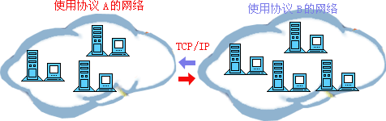
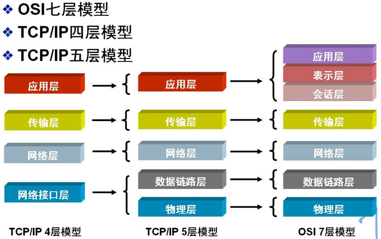
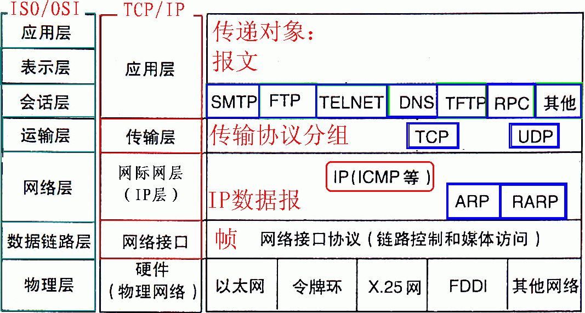

- 1. División de capas de red
- 2. Modelo de red OSI de siete capas
- 3. Dirección IP
- 4. Máscara de subred y división de redes
- 5. Protocolo ARP/RARP
- 6. Protocolo de enrutamiento
- 7. Protocolo TCP/IP
- 8. Protocolo UDP
- 9. Protocolo DNS
- 10. Protocolo NAT
- 11. Protocolo DHCP
- 12. Protocolo HTTP
- 13. Un ejemplo
El contenido central del aprendizaje de redes de computadoras es el estudio de los protocolos de red. Los protocolos de red son un conjunto de reglas, estándares o acuerdos establecidos para el intercambio de datos en redes de computadoras. Debido a que los terminales de datos de diferentes usuarios pueden adoptar distintos conjuntos de caracteres, para que ambos puedan comunicarse deben hacerlo sobre la base de un cierto estándar. Una analogía muy gráfica es nuestro idioma: nuestro gran país tiene un territorio extenso y una gran población, los idiomas locales son muy variados y las diferencias entre dialectos son enormes. El dialecto de la región A puede ser completamente inaceptable para las personas de la región B, por lo que debemos establecer un estándar lingüístico para la comunicación de todas las personas del país; esa es la función de nuestro mandarín. Del mismo modo, a nivel mundial, el idioma estándar para comunicarnos con amigos extranjeros es el inglés, por eso tenemos que estudiarlo tan duramente.
Los protocolos de redes de computadoras, al igual que nuestro lenguaje, son diversos. La compañía ARPA, entre 1977 y 1979, lanzó un protocolo de red llamado ARPANET que fue ampliamente aclamado, principalmente porque introdujo el conocido protocolo estándar de red TCP/IP. Actualmente, el protocolo TCP/IP se ha convertido en el "lenguaje común" de Internet; la siguiente figura muestra un esquema de comunicación entre diferentes grupos de computadoras mediante TCP/IP.

1. División de capas de red
Para que las computadoras fabricadas por diferentes fabricantes puedan comunicarse entre sí y así establecer redes de computadoras en un ámbito más amplio, la Organización Internacional de Normalización (ISO) propuso en 1978 el "Modelo de Referencia de Interconexión de Sistemas Abiertos", es decir, el famoso modelo OSI/RM (Open System Interconnection/Reference Model). Este divide los protocolos de comunicación de la arquitectura de redes de computadoras en siete capas, de abajo hacia arriba: capa física (Physical Layer), capa de enlace de datos (Data Link Layer), capa de red (Network Layer), capa de transporte (Transport Layer), capa de sesión (Session Layer), capa de presentación (Presentation Layer) y capa de aplicación (Application Layer). Entre ellas, la cuarta capa realiza el servicio de transferencia de datos, y las tres capas superiores están orientadas al usuario.
Además del modelo estándar OSI de siete capas, las divisiones comunes de capas de red incluyen el protocolo TCP/IP de cuatro capas y el protocolo TCP/IP de cinco capas. La correspondencia entre ellos se muestra en la siguiente figura:

2. Modelo de red OSI de siete capas
El protocolo TCP/IP es, sin duda, el protocolo base de Internet; sin él, sería completamente imposible conectarse a la red, y cualquier operación relacionada con Internet no puede prescindir del protocolo TCP/IP. Tanto en el modelo OSI de siete capas como en los modelos TCP/IP de cuatro o cinco capas, cada capa tiene su propio protocolo exclusivo para realizar su trabajo correspondiente y comunicarse con las capas superior e inferior. Dado que el modelo OSI de siete capas es la división estándar de capas de red, tomamos el modelo OSI de siete capas como ejemplo para presentarlo una por una de abajo hacia arriba.

1) Capa física (Physical Layer)
Activa, mantiene y cierra las características mecánicas, eléctricas, funcionales y de proceso entre los puntos finales de comunicación.Esta capa proporciona un medio físico confiable para la transmisión de datos a los protocolos de capas superiores. En pocas palabras, la capa física garantiza que los datos brutos puedan transmitirse a través de diversos medios físicos.En la capa física, recuerda dos nombres de dispositivos importantes: el repetidor (Repeater, también llamado amplificador) y el concentrador (hub).
2) Capa de enlace de datos (Data Link Layer)
La capa de enlace de datos proporciona servicios a la capa de red sobre la base de los servicios ofrecidos por la capa física. Su servicio más básico es transmitir de manera confiable los datos provenientes de la capa de red a la capa de red de la máquina de destino en el nodo adyacente. Para lograr este objetivo, el enlace de datos debe disponer de una serie de funciones correspondientes, principalmente: cómo combinar los datos en bloques de datos, que en la capa de enlace de datos se denominan tramas (frame), siendo la trama la unidad de transmisión de la capa de enlace de datos; cómo controlar la transmisión de tramas en el canal físico, incluyendo el manejo de errores de transmisión, el ajuste de la velocidad de envío para que coincida con el receptor; y proporcionar la gestión de establecimiento, mantenimiento y liberación de la vía de enlace de datos entre dos entidades de red. La capa de enlace de datos proporciona una transmisión confiable sobre medios físicos no confiables. Las funciones de esta capa incluyen: direccionamiento de dirección física, formación de tramas, control de flujo, detección de errores en los datos, retransmisión, etc.
Puntos de conocimiento importantes sobre la capa de enlace de datos:
1> La capa de enlace de datos proporciona una transmisión de datos confiable a la capa de red;
2> La unidad básica de datos es la trama;
3> Protocolo principal: protocolo Ethernet;
4> Dos nombres de dispositivos importantes: puente (bridge) y conmutador (switch).
3) Capa de red (Network Layer)
El propósito de la capa de red es lograr la transmisión transparente de datos entre dos sistemas terminales; sus funciones específicas incluyen direccionamiento y selección de ruta, establecimiento, mantenimiento y terminación de conexiones, etc. Los servicios que proporciona hacen que la capa de transporte no necesite conocer las técnicas de transmisión y conmutación de datos en la red. Si desea recordar la capa de red con la menor cantidad de palabras, estas son: "selección de ruta, enrutamiento y direccionamiento lógico".
En la capa de red intervienen numerosos protocolos, incluido el más importante, que también es el protocolo central de TCP/IP: el protocolo IP. El protocolo IP es muy simple: solo proporciona un servicio de transmisión no confiable y sin conexión. Las funciones principales del protocolo IP incluyen: transmisión de datagramas sin conexión, selección de ruta de datagramas y control de errores. Junto con el protocolo IP, para implementar sus funciones, también se utilizan el protocolo de resolución de direcciones ARP, el protocolo de resolución inversa de direcciones RARP, el protocolo de mensajes de control de Internet ICMP y el protocolo de gestión de grupos de Internet IGMP. Los protocolos específicos se resumirán en la siguiente parte. Los puntos clave de la capa de red son:
1> La capa de red es responsable de la selección de ruta de los paquetes de datos entre subredes. Además, la capa de red también puede implementar funciones como el control de congestión y la interconexión de redes;
2> La unidad básica de datos es el datagrama IP;
3> Protocolos principales incluidos:
Protocolo IP (Internet Protocol, protocolo de interconexión de Internet);
Protocolo ICMP (Internet Control Message Protocol, protocolo de mensajes de control de Internet);
Protocolo ARP (Address Resolution Protocol, protocolo de resolución de direcciones);
Protocolo RARP (Reverse Address Resolution Protocol, protocolo de resolución inversa de direcciones).
4> Dispositivo importante: router.
4) Capa de transporte (Transport Layer)
El primer extremo a extremo, es decir, el nivel de host a host. La capa de transporte es responsable de segmentar los datos de las capas superiores y proporcionar una transmisión extremo a extremo, confiable o no confiable. Además, la capa de transporte también debe manejar los problemas de control de errores y control de flujo de extremo a extremo. La tarea de la capa de transporte es, según las características de la subred de comunicación, utilizar de manera óptima los recursos de la red, proporcionar las funciones de establecer, mantener y cancelar conexiones de transporte entre las capas de sesión de dos sistemas terminales, y ser responsable de la transmisión confiable de datos de extremo a extremo. En esta capa, la unidad de datos de protocolo para la transferencia de información se denomina segmento o mensaje. La capa de red solo transmite los paquetes de datos enviados por el nodo de origen al nodo de destino según la dirección de red, mientras que la capa de transporte se encarga de transmitir los datos de manera confiable al puerto correspondiente. Puntos clave sobre la capa de red:
- 1> La capa de transporte es responsable de segmentar los datos de las capas superiores y proporcionar transmisión extremo a extremo, confiable o no confiable, así como el control de errores y el control de flujo de extremo a extremo;
- 2> Protocolos principales incluidos: protocolo TCP (Transmission Control Protocol, protocolo de control de transmisión), protocolo UDP (User Datagram Protocol, protocolo de datagramas de usuario);
- 3> Dispositivo importante: puerta de enlace (gateway).
5) Capa de sesión
La capa de sesión gestiona los procesos de sesión entre hosts, es decir, es responsable de establecer, administrar y terminar las sesiones entre procesos. La capa de sesión también utiliza la inserción de puntos de verificación en los datos para lograr la sincronización de los datos.
6) Capa de presentación
La capa de presentación transforma los datos o la información de las capas superiores para garantizar que la información de la capa de aplicación de un host pueda ser entendida por las aplicaciones de otro host. La conversión de datos en la capa de presentación incluye cifrado, compresión, conversión de formato, etc.
7) Capa de aplicación
Proporciona interfaces para que los sistemas operativos o las aplicaciones de red accedan a los servicios de red.
Puntos clave de la capa de sesión, la capa de presentación y la capa de aplicación:
- 1> La unidad básica de transmisión de datos es el mensaje;
- 2> Protocolos principales incluidos: FTP (protocolo de transferencia de archivos), Telnet (protocolo de inicio de sesión remota), DNS (protocolo de resolución de nombres de dominio), SMTP (protocolo de transferencia de correo), protocolo POP3 (protocolo de oficina de correos), protocolo HTTP (Hyper Text Transfer Protocol).
3. Dirección IP
1) Dirección de red
La dirección IP se compone del número de red (incluido el número de subred) y del número de host. El número de host de la dirección de red es todo 0, y la dirección de red representa toda la red.
2) Dirección de broadcast
La dirección de broadcast generalmente se denomina dirección de broadcast directo, para distinguirla de la dirección de broadcast limitado.
La dirección de broadcast es exactamente opuesta al número de host de la dirección de red; en la dirección de broadcast, el número de host es todo 1. Cuando se envía un mensaje a la dirección de broadcast de una red, todos los hosts dentro de esa red pueden recibir dicho mensaje de broadcast.
3) Dirección de multicast
La dirección de clase D es la dirección de multicast.
Primero recordemos las direcciones de clase A, B, C y D:
La dirección de clase A comienza con 0, el primer byte se usa como número de red, y el rango de direcciones es: 0.0.0.0~127.255.255.255;modified @2016.05.31)
La dirección de clase B comienza con 10, los primeros dos bytes se usan como número de red, y el rango de direcciones es: 128.0.0.0~191.255.255.255;
La dirección de clase C comienza con 110, los primeros tres bytes se usan como número de red, y el rango de direcciones es: 192.0.0.0~223.255.255.255.
La dirección de clase D comienza con 1110, y el rango de direcciones es 224.0.0.0~239.255.255.255. La dirección de clase D se usa como dirección de multicast (comunicación de uno a muchos);
La dirección de clase E comienza con 1111, y el rango de direcciones es 240.0.0.0~255.255.255.255. La dirección de clase E es una dirección reservada para uso futuro.
Nota: solo las clases A, B y C tienen distinción entre número de red y número de host; las direcciones de clase D y clase E no dividen número de red y número de host.
4）255.255.255.255
Esta dirección IP se refiere a la dirección de broadcast limitado. La diferencia entre la dirección de broadcast limitado y la dirección de broadcast general (dirección de broadcast directo) es que la dirección de broadcast limitado solo se puede usar en la red local; los routers no reenvían paquetes cuya dirección de destino sea una dirección de broadcast limitado. La dirección de broadcast general se puede usar tanto para broadcast local como para broadcast entre segmentos de red. Por ejemplo: después de que el host 192.168.1.1/30 envía un datagrama de broadcast directo, otro segmento de red 192.168.1.5/30 también puede recibir ese datagrama; si se envía un datagrama de broadcast limitado, no podrá recibirlo.
Nota: la dirección de broadcast general (dirección de broadcast directo) puede atravesar algunos routers (por supuesto, no todos los routers), mientras que la dirección de broadcast limitado no puede atravesar routers.
5）0.0.0.0
Se usa frecuentemente para buscar la propia dirección IP. Por ejemplo, en nuestros protocolos RARP, BOOTP y DHCP, si una máquina sin disco con dirección IP desconocida quiere conocer su propia dirección IP, envía un paquete de solicitud IP con 255.255.255.255 como dirección de destino a los servidores del ámbito local (específicamente, dentro del ámbito bloqueado por los routers).
6) Dirección de loopback
127.0.0.0/8 se usa como dirección de loopback. La dirección de loopback representa la dirección de la propia máquina y se usa frecuentemente para pruebas locales; la más utilizada es 127.0.0.1.
7) Direcciones privadas de clase A, B y C
Las direcciones privadas (private address) también se denominan direcciones dedicadas; no se utilizan a nivel global y solo tienen significado local.
Dirección privada de clase A: 10.0.0.0/8, rango: 10.0.0.0~10.255.255.255
Dirección privada de clase B: 172.16.0.0/12, rango: 172.16.0.0~172.31.255.255
Dirección privada de clase C: 192.168.0.0/16, rango: 192.168.0.0~192.168.255.255
4. Máscara de subred y división de redes
Con la creciente expansión de las aplicaciones de Internet, las desventajas del IPv4 original también se han ido exponiendo gradualmente: el número de red ocupa demasiados bits, mientras que el número de host tiene muy pocos bits, por lo que las direcciones de host que puede proporcionar son cada vez más escasas. Actualmente, además de usar NAT dentro de la empresa para asignar direcciones reservadas de forma interna, normalmente se subdivide una dirección IP de clase alta para formar múltiples subredes y proporcionarlas a grupos de usuarios de diferentes tamaños.
El objetivo principal aquí es aprovechar eficazmente las direcciones IP en el caso de segmentación de red. Se toma la parte alta del número de host como número de subred, y se extiende o comprime la máscara de subred a partir del límite habitual de los bits de red, para crear más subredes de cierta clase de direcciones. Sin embargo, al crear más subredes, el número de direcciones de host disponibles en cada subred se reduce en comparación con el original.
¿Qué es la máscara de subred?
La máscara de subred sirve para indicar si dos direcciones IP pertenecen a la misma subred. También es una dirección binaria de 32 bits; cada bit 1 indica que ese bit es de red, y cada bit 0 indica que es de host. Al igual que la dirección IP, se representa en notación decimal punteada. Si el resultado del cálculo AND bit a bit de dos direcciones IP con la máscara de subred es el mismo, significa que ambas pertenecen a la misma subred.
Al calcular la máscara de subred, debemos tener en cuenta las direcciones reservadas en la dirección IP, es decir, la dirección "0" y la dirección de broadcast. Estas se refieren a las direcciones IP cuando la dirección de host o la dirección de red es todo "0" o todo "1". Representan la dirección de esta red y la dirección de broadcast, y generalmente no pueden incluirse en el cálculo.
Cálculo de la máscara de subred:
Para una dirección IP que no necesita dividirse en subredes, su máscara de subred es muy simple, es decir, se puede escribir según su definición: por ejemplo, si una dirección IP de clase B es 10.12.3.0 y no necesita dividirse en subredes, la máscara de subred de esta dirección IP es 255.255.0.0. Si es una dirección de clase C, su máscara de subred es 255.255.255.0. Los demás casos se deducen por analogía y no se detallan aquí. A continuación, lo clave que presentaremos es cómo calcular la máscara de cada subred cuando una dirección IP necesita tomar además los bits altos del host como número de red de la subred dividida, y el resto son los números de host de cada subred.
A continuación, resumimos las preguntas comunes de entrevista sobre máscaras de subred y división de redes:
1) Cálculo utilizando el número de subredes
Antes de calcular la máscara de subred, es necesario tener claro el número de subredes que se van a dividir y el número de hosts requerido en cada subred.
(1) Convertir el número de subredes a binario;
Por ejemplo, si se desea dividir la dirección IP de clase B 168.195.0.0 en 27 subredes: 27 = 11011;
(2) Obtener el número de bits de ese binario, que es N;
Ese binario tiene cinco dígitos, N = 5
(3) Obtener la máscara de subred por defecto de esa clase de dirección IP y poner los primeros N bits de la parte de dirección de host en 1; así se obtiene la máscara de subred para dividir la dirección IP en subredes.
Al poner los primeros 5 bits de la parte de dirección de host de la máscara de subred de clase B 255.255.0.0 en 1, se obtiene 255.255.248.0
2) Cálculo utilizando el número de hosts
Por ejemplo, si se desea dividir la dirección IP de clase B 168.195.0.0 en varias subredes, y cada subred tiene 700 hosts:
(1) Convertir el número de hosts a binario;
700=1010111100
(2) Si el número de hosts es menor o igual a 254 (nota: se eliminan las dos direcciones IP reservadas), se obtiene el número de bits de ese binario de hosts, que es N; aquí seguramente N < 8. Si es mayor que 254, entonces N > 8, lo que significa que la dirección de host ocupará más de 8 bits;
Ese binario tiene diez dígitos, N = 10;
(3) Usar 255.255.255.255 para poner en 1 todos los bits de la parte de dirección de host de esa dirección IP de dicha clase, y luego poner en 0 los N bits desde atrás hacia adelante; ese será el valor de la máscara de subred.
Al poner en 1 todos los bits de la dirección de host de la máscara de subred de clase B 255.255.0.0, se obtiene 255.255.255.255; luego, desde atrás hacia adelante, se ponen en 0 los últimos 10 bits, es decir: 11111111.11111111.11111100.00000000, que es 255.255.252.0. Esta es la máscara de subred para la dirección IP de clase B 168.195.0.0 que se desea dividir en subredes de 700 hosts.
3) Otro tipo de ejercicio: se debe planificar las direcciones de subred según el número de hosts de cada red ycalcular la máscara de subred. Esto también se puede calcular según el principio anterior.
Por ejemplo, si una subred tiene 10 hosts, entonces las direcciones IP necesarias para esta subred son:
10＋1＋1＋1＝13
Nota: el primer 1 que se suma se refiere a la dirección de gateway necesaria para la conexión de esta red; los dos 1 siguientes se refieren respectivamente a la dirección dered y a la dirección de broadcast.
Como 13 es menor que 16 (16 es igual a 2 elevado a la 4), el bit de host es de 4 bits. Y 256 − 16 = 240, por lo que la máscara de subred es 255.255.255.240.
Si una subred tiene 14 hosts, un error frecuente es seguir asignando una subred con espacio de 16 direcciones y olvidarse de asignar la dirección al gateway. Esto es incorrecto, porque 14 + 1 + 1 + 1 = 17, y 17 es mayor que 16, por lo que solo podemos asignar una subred con espacio de 32 direcciones (32 es igual a 2 elevado a la 5). En este caso, la máscara de subred es: 255.255.255.224.
5. Protocolo ARP/RARP
El Protocolo de Resolución de Direcciones, es decir, ARP (Address Resolution Protocol), es un protocolo TCP/IP que obtiene la dirección física a partir de la dirección IP.Cuando el host envía información, difunde una solicitud ARP que contiene la dirección IP de destino a todos los hosts de la red y recibe el mensaje de respuesta, para así determinar la dirección física del destino. Tras recibir el mensaje de respuesta, almacena la dirección IP y la dirección física en la caché ARP local y las conserva durante un cierto tiempo; en la próxima solicitud, consulta directamente la caché ARP para ahorrar recursos. El protocolo de resolución de direcciones se basa en la confianza mutua entre los hosts de la red; los hosts de la red pueden enviar mensajes de respuesta ARP por sí mismos, y otros hosts, al recibir el mensaje de respuesta, no verifican su autenticidad y lo registran en su caché ARP local. Por lo tanto, un atacante puede enviar un mensaje de respuesta ARP falso a un host, haciendo que la información que envía no llegue al host previsto o llegue a un host equivocado; esto constituye una suplantación ARP.El comando ARP se puede usar para consultar la correspondencia entre direcciones IP y direcciones MAC en la caché ARP local, agregar o eliminar correspondencias estáticas, etc.
Ejemplo del flujo de trabajo de ARP:
La dirección IP del host A es 192.168.1.1 y su dirección MAC es 0A-11-22-33-44-01;
La dirección IP del host B es 192.168.1.2 y su dirección MAC es 0A-11-22-33-44-02;
Cuando el host A necesita comunicarse con el host B, el Protocolo de Resolución de Direcciones (ARP) puede resolver la dirección IP del host B (192.168.1.2) en la dirección MAC del host B. El flujo de trabajo es el siguiente:
- (1) Según el contenido de la tabla de enrutamiento del host A, IP determina que la dirección IP de reenvío para acceder al host B es 192.168.1.2. Luego, el host A verifica en su caché ARP local si hay una dirección MAC coincidente para el host B.
- (2) Si el host A no encuentra la asignación en la caché ARP, preguntará por la dirección de hardware de 192.168.1.2, transmitiendo así una trama de solicitud ARP a todos los hosts de la red local. La dirección IP y la dirección MAC del host de origen A se incluyen en la solicitud ARP. Cada host en la red local recibe la solicitud ARP y comprueba si coincide con su propia dirección IP. Si un host descubre que la dirección IP solicitada no coincide con la suya, descarta la solicitud ARP.
- (3) El host B determina que la dirección IP en la solicitud ARP coincide con su propia dirección IP, por lo que añade la asignación de la dirección IP y la dirección MAC del host A a su caché ARP local.
- (4) El host B envía directamente un mensaje de respuesta ARP que contiene su dirección MAC de vuelta al host A.
- (5) Cuando el host A recibe el mensaje de respuesta ARP enviado por el host B, actualiza la caché ARP con la asignación de la dirección IP y la dirección MAC del host B. La caché local tiene un tiempo de vida; cuando este expira, se repite el proceso anterior. Una vez que se determina la dirección MAC del host B, el host A puede enviar comunicaciones IP al host B.
El Protocolo de Resolución Inversa de Direcciones, o RARP, tiene una función opuesta a la del protocolo ARP; convierte la dirección física de un host en la red de área local en una dirección IP.
Por ejemplo, si un host en la red de área local solo conoce su dirección física pero no su dirección IP, puede enviar una solicitud de difusión pidiendo su propia dirección IP mediante el protocolo RARP, y un servidor RARP se encargará de responder.
Flujo de trabajo del protocolo RARP:
- (1) El host envía una difusión RARP local; en este paquete de difusión declara su dirección MAC y solicita que cualquier servidor RARP que reciba esta solicitud le asigne una dirección IP.
- (2) Cuando el servidor RARP en el segmento de red local recibe esta solicitud, consulta su lista RARP para buscar la dirección IP correspondiente a esa dirección MAC.
- (3) Si existe, el servidor RARP envía un paquete de respuesta al host de origen y proporciona esa dirección IP al host solicitante para que la use.
- (4) Si no existe, el servidor RARP no responde en absoluto.
6. Protocolo de enrutamiento
Los protocolos de enrutamiento comunes incluyen: RIP y OSPF.
RIPProtocolo: El algoritmo subyacente es el algoritmo de Bellman-Ford. La métrica que utiliza para seleccionar rutas es el número de saltos (hop count). El número máximo de saltos es 15; si supera los 15 saltos, descartará el paquete de datos.
OSPFProtocolo: Open Shortest Path First (Primero la ruta más corta abierta). El algoritmo subyacente es el algoritmo de Dijkstra. Es un protocolo de enrutamiento de estado de enlace. Las métricas que utiliza para seleccionar rutas son el ancho de banda y el retardo.
7. Protocolo TCP/IP
El protocolo TCP/IP es el protocolo más básico de Internet y la base de la red interconectada internacional de Internet. Está compuesto por el protocolo IP de la capa de red y el protocolo TCP de la capa de transporte. En términos sencillos: TCP se encarga de detectar problemas en la transmisión; en cuanto hay un problema, envía una señal solicitando la retransmisión hasta que todos los datos se transmitan de forma segura y correcta al destino. Por su parte, IP asigna una dirección a cada dispositivo conectado a Internet.
La capa IP recibe los paquetes de datos enviados por la capa inferior (la capa de interfaz de red, por ejemplo el controlador de dispositivo Ethernet) y los envía a la capa superior: la capa TCP o UDP. A la inversa, la capa IP también transmite los paquetes recibidos de la capa TCP o UDP a la capa inferior. Los paquetes IP no son fiables, porque IP no hace nada para confirmar si los paquetes se envían en orden o si han sido dañados. El paquete IP contiene la dirección del host que lo envía (dirección de origen) y la dirección del host que lo recibe (dirección de destino).
TCP es un protocolo de comunicación orientado a la conexión. Establece la conexión mediante un triple apretón de manos (three-way handshake) y la elimina cuando finaliza la comunicación. Debido a que TCP está orientado a la conexión, solo puede utilizarse para comunicaciones de extremo a extremo. TCP proporciona un servicio de flujo de datos fiable, y utiliza la técnica de "confirmación positiva con retransmisión" para lograr la fiabilidad de la transmisión. TCP también emplea un método llamado "ventana deslizante" para el control de flujo; dicha ventana representa en realidad la capacidad de recepción y se utiliza para limitar la velocidad de envío del emisor.
Formato del encabezado del segmento TCP:

El triple apretón de manos y el cierre en cuatro pasos del protocolo TCP:

Nota: seq: "sequance" (número de secuencia);ack: "acknowledge" (número de confirmación);SYN: "synchronize" (indicador de solicitud de sincronización);；ACK: "acknowledge" (indicador de confirmación).；FIN: "Finally" (indicador de finalización).
Proceso de establecimiento de la conexión TCP:Primero, el cliente envía un mensaje de solicitud de conexión. El servidor, tras aceptar la conexión, responde con un mensaje ACK y asigna recursos para esta conexión. Cuando el cliente recibe el mensaje ACK, también envía un mensaje ACK al servidor y asigna recursos. Así se establece la conexión TCP.
Proceso de cierre de la conexión TCP:Supongamos que el cliente inicia una solicitud para cerrar la conexión, es decir, envía un mensaje FIN. Cuando el servidor recibe el mensaje FIN, significa que "yo, el cliente, ya no tengo datos que enviarte", pero si aún tienes datos sin enviar, no es necesario que cierres el socket apresuradamente; puedes seguir enviando datos. Por lo tanto, primero envías un ACK, "para decirle al cliente: he recibido tu solicitud, pero aún no estoy listo; continúa esperando mi mensaje". En este momento, el cliente entra en estado FIN_WAIT y sigue esperando el mensaje FIN del servidor. Cuando el servidor determina que los datos se han enviado por completo, envía un mensaje FIN al cliente, "para decirle al cliente: bien, ya he enviado todos mis datos, listo para cerrar la conexión". Tras recibir el mensaje FIN, el cliente "sabe que puede cerrar la conexión, pero aún no confía en la red y teme que el servidor no sepa que debe cerrarla, por lo que tras enviar el ACK entra en estado TIME_WAIT; si el servidor no recibe el ACK, puede retransmitirlo". Cuando el servidor recibe el ACK, "sabe que puede cerrar la conexión". Si el cliente no recibe respuesta después de esperar 2MSL, esto demuestra que el servidor se ha cerrado correctamente; entonces el cliente también puede cerrar la conexión. Ok, así es como se cierra la conexión TCP.
¿Por qué es necesario el triple apretón de manos?
En el caso de solo dos "apretones de manos", supongamos que el cliente quiere establecer una conexión con el servidor, pero el datagrama de solicitud de conexión se pierde en el camino, por lo que el cliente tiene que reenviarlo. En ese momento, el servidor solo recibe una solicitud de conexión y, por tanto, puede establecer la conexión normalmente. Sin embargo, a veces el cliente reenvía la solicitud no porque el datagrama se haya perdido, sino porque el proceso de transmisión de datos puede haberse bloqueado en algún nodo debido a la alta concurrencia de la red. En tal caso, el servidor recibirá dos solicitudes sucesivamente y seguirá esperando que los dos clientes le envíen datos... Aquí está el problema: el cliente en realidad solo ha hecho una solicitud, pero el servidor tiene dos respuestas. En un caso extremo, debido a que el cliente reenvía varias veces la solicitud, el servidor podría terminar con N respuestas esperando, lo que provoca un gran desperdicio de recursos. Por lo tanto, ¡el "triple apretón de manos" es muy necesario!
¿Por qué es necesario el cierre en cuatro pasos?
Imagina que ahora eres el cliente y quieres cerrar todas las conexiones con el servidor. ¿Qué harías? Primero, dejas de enviar datos al servidor y esperas su respuesta. Pero el asunto no termina ahí; aunque tú ya no envíes datos al servidor, como habéis establecido previamente una conexión equitativa, en este momento él también tiene la iniciativa de enviarte datos. Por lo tanto, el servidor también debe dejar de enviarte datos por iniciativa propia y esperar tu confirmación. En realidad, en pocas palabras, se trata de garantizar la ejecución completa del acuerdo entre ambas partes.
Protocolos que usan TCP: FTP (Protocolo de Transferencia de Archivos), Telnet (protocolo de inicio de sesión remoto), SMTP (Protocolo Simple de Transferencia de Correo), POP3 (a diferencia de SMTP, se utiliza para recibir correo), protocolo HTTP, etc.
8. Protocolo UDP
UDP (Protocolo de Datagramas de Usuario) es un protocolo de comunicación sin conexión. Los datos UDP incluyen información del puerto de destino y del puerto de origen. Como la comunicación no requiere conexión, puede realizar envíos por difusión.
UDP no requiere confirmación del receptor durante la comunicación; es una transmisión no fiable y puede haber pérdida de paquetes. En aplicaciones reales, se requiere que los programadores verifiquen mediante programación.
UDP se encuentra en la misma capa que TCP, pero no se ocupa del orden, los errores ni el reenvío de los paquetes. Por lo tanto, UDP no se utiliza en servicios orientados a conexión que usan circuitos virtuales; UDP se usa principalmente en servicios orientados a consulta-respuesta, como NFS. En comparación con FTP o Telnet, estos servicios requieren un volumen menor de información para intercambiar.
Cada mensaje UDP se divide en dos partes: la cabecera UDP y el área de datos UDP. La cabecera está compuesta por cuatro campos de 16 bits (2 bytes) de longitud, que indican respectivamente el puerto de origen, el puerto de destino, la longitud del mensaje y el valor de verificación. La cabecera UDP consta de 4 campos, cada uno de los cuales ocupa 2 bytes, de la siguiente manera:
- (1) Número de puerto de origen;
- (2) Número de puerto de destino;
- (3) Longitud del datagrama;
- (4) Valor de verificación.
Los protocolos que usan UDP incluyen: TFTP (Protocolo Simple de Transferencia de Archivos), SNMP (Protocolo Simple de Gestión de Red), DNS (Protocolo de Resolución de Nombres de Dominio), NFS, BOOTP.
TCP 与 UDP La diferencia:TCP es un servicio de flujo de bytes orientado a la conexión y fiable; UDP es un servicio de datagramas sin conexión y no fiable.
9. Protocolo DNS
DNS es la abreviatura de DomainNameSystem (Sistema de Nombres de Dominio). Este sistema se utiliza para nombrar computadoras y servicios de red organizados en una estructura jerárquica de dominios,Puede entenderse simplemente como la conversión de una URL en una dirección IP.Los nombres de dominio están compuestos por una serie de palabras o abreviaturas separadas por puntos. Cada nombre de dominio corresponde a una dirección IP única. En Internet, existe una correspondencia uno a uno entre nombres de dominio y direcciones IP. DNS es el servidor que realiza la resolución de nombres de dominio. La nomenclatura DNS se utiliza en redes TCP/IP como Internet, para encontrar computadoras y servicios mediante nombres fáciles de usar.
10. Protocolo NAT
NAT (Network Address Translation, Traducción de Direcciones de Red) es una tecnología de acceso a redes de área amplia (WAN). Es una tecnología de conversión que transforma direcciones privadas (reservadas) en direcciones IP legítimas. Se utiliza ampliamente en diversos tipos de métodos de acceso a Internet y en diversos tipos de redes. La razón es simple: NAT no solo resuelve perfectamente el problema de la escasez de direcciones IP, sino que también puede evitar eficazmente ataques desde el exterior de la red, ocultando y protegiendo las computadoras internas de la red.
11. Protocolo DHCP
El Protocolo de Configuración Dinámica de Host (DHCP, Dynamic Host Configuration Protocol) es un protocolo de red para redes de área local, que funciona con el protocolo UDP. Tiene principalmente dos usos: asignar automáticamente direcciones IP a redes internas o proveedores de servicios de red, y servir a los usuarios o administradores de redes internas como medio de gestión centralizada de todas las computadoras.
12. Protocolo HTTP
El Protocolo de Transferencia de Hipertexto (HTTP, HyperText Transfer Protocol) es uno de los protocolos de red más utilizados en Internet. Todos los archivos WWW deben cumplir con este estándar. HTTP ¿Qué solicitudes incluye el protocolo?
GET: solicita leer la información señalada por la URL.
POST: añade información al servidor (por ejemplo, comentarios).
PUT: almacena un documento bajo la URL dada.
DELETE: elimina el recurso señalado por la URL dada.
HTTP En, POST 与 GET la diferencia
- 1) GET obtiene datos del servidor; POST envía datos al servidor.
- 2) GET añade la cola de datos de parámetros a la URL señalada por el atributo Action del formulario enviado; los valores se corresponden uno a uno con cada campo del formulario y se pueden ver en la URL.
- 3) GET transmite una cantidad pequeña de datos, no mayor de 2 KB; POST transmite una cantidad mayor de datos, generalmente se considera ilimitada por defecto.
- 4) Según la especificación HTTP, GET se utiliza para obtener información, y debe ser seguro e idempotente.
- I. Lo que se llamasegurosignifica que la operación se utiliza para obtener información, no para modificarla. En otras palabras, una solicitud GET generalmente no debería producir efectos secundarios. Es decir, solo obtiene información del recurso, como una consulta de base de datos; no modifica ni añade datos, y no afecta al estado del recurso.
- II. idempotentesignifica que múltiples solicitudes a la misma URL deberían devolver el mismo resultado.
13. Un ejemplo
Al escribir en el navegadorhttp://www.baidu.com/todo el proceso que se ejecuta después.
Ahora supongamos que escribimos http://www.baidu.com en el navegador del cliente (cliente), y baidu.com es el servidor (servidor) al que se desea acceder. A continuación se analizan en detalle las operaciones relacionadas con los protocolos que ejecuta el cliente para acceder al servidor:
- 1) El navegador del cliente resuelve mediante DNS la dirección IP de www.baidu.com: 220.181.27.48, y a través de esta dirección IP encuentra la ruta del cliente al servidor. El navegador del cliente inicia una sesión HTTP hacia 220.161.27.48, luego encapsula los paquetes de datos mediante TCP y los introduce en la capa de red.
- 2) En la capa de transporte del cliente, la solicitud de sesión HTTP se divide en segmentos de mensaje, y se añaden los puertos de origen y destino. Por ejemplo, el servidor usa el puerto 80 para escuchar las solicitudes del cliente; el cliente selecciona aleatoriamente un puerto, como el 5000, para intercambiar con el servidor, y el servidor devuelve la solicitud correspondiente al puerto 5000 del cliente. Luego, se utiliza la dirección IP de la capa IP para encontrar el destino.
- 3) La capa de red del cliente no necesita preocuparse por la capa de aplicación ni la capa de transporte; lo principal que hace es determinar cómo llegar al servidor consultando la tabla de enrutamiento. Durante el proceso puede atravesar múltiples routers; estos son trabajos realizados por los routers, no se describirán en detalle. En resumen, se decide qué ruta tomar para llegar al servidor consultando la tabla de enrutamiento.
- 4) En la capa de enlace del cliente, el paquete se envía al router a través de la capa de enlace. Se utiliza el protocolo de vecinos para encontrar la dirección MAC de la dirección IP dada, luego se envía una solicitud ARP para encontrar la dirección de destino. Si se obtiene una respuesta, el paquete IP intercambiado mediante la solicitud-respuesta ARP ya puede transmitirse; entonces se envía el paquete IP hasta la dirección del servidor.
Enlace original: http://www.cnblogs.com/maybe2030/p/4781555.html
Haz clic para compartir notas
<p style="font-size:14px;">¡Las notas deben ser una extensión del contenido de este artículo!</p><br> <p style="font-size:12px;"><a href="../tougao.html" target="_blank">Para enviar artículos, haz clic aquí</a></p> <p style="font-size:14px;"><a href="./runoob-user-test-intro.html" target="_blank">Cómo obtener el código de invitación de registro</a></p> <h3 class="text-muted"><i class="fa fa-info-circle" aria-hidden="true"></i> Antes de compartir notas, debes <a href=".." class="runoob-pop">iniciar sesión</a>.</h3> <p><a href="./runoob-user-test-intro.html" target="_blank">Cómo obtener el código de invitación de registro</a></p>